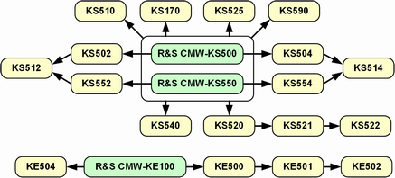

The LTE signaling firmware application emulates an E-UTRAN cell and communicates with the UE under test. The UE can synchronize to the downlink signal and attach to the PS domain. A connection can be set up (3GPP-compliant RMC or user-defined channel).
Two basic signaling options are available: R&S CMW-KS500 for R8 FDD signals and R&S CMW-KS550 for R8 TDD signals. At least one of these basic options is required to use the signaling application. Both basic options support only configurations with a single antenna (SISO).
- R&S CMW-KS502 adds support of DL carrier aggregation for FDD signals.
R&S CMW-KS552 adds support of DL carrier aggregation for TDD signals. - R&S CMW-KS504 adds R12 features for FDD signals.
R&S CMW-KS554 adds R12 features for TDD signals. - R&S CMW-KS510 provides advanced parameter settings for R8.
R&S CMW-KS512 provides advanced parameter settings for R10.
R&S CMW-KS514 provides advanced parameter settings for R12. - R&S CMW-KS520 adds support of DL MIMO 2x2 and SIMO 1x2.
R&S CMW-KS521 is required for DL MIMO 4x2.
R&S CMW-KS522 is required for DL MIMO 8x2. - R&S CMW-KS540 adds support of DL MIMO 4x4.
- R&S CMW-KS525 adds a user-defined operating band and special bands.
- R&S CMW-KS590 is required for machine-type communication (MTC).
- R&S CMW-KE100 enables basic internal fading.
R&S CMW-KE500 is required for SISO and MIMO 2x2 fading.
R&S CMW-KE501 is required for MIMO 4x2 fading.
R&S CMW-KE502 is required for MIMO 8x2 fading.
R&S CMW-KE504 is required for MIMO 2x4 and 4x4 fading. - R&S CMW-KS170 is required for cell broadcast services for alerting networks
The dependencies between the options are shown in the following figure. Example: R&S CMW-KS521 needs R&S CMW-KS520 which needs R&S CMW-KS500 or R&S CMW-KS550.

Tests can be performed using the LTE multi-evaluation measurement, the PRACH measurement or the SRS measurement (all included in the options R&S CMW-KM500 and R&S CMW-KM550).
Data transfer tests can be performed using the data application unit (DAU, option R&S CMW-B450x and R&S CMW-KM050). The DAU also provides an IMS server for voice over IMS and SMS over IMS. Audio tests can be performed using the audio board plus a speech codec (R&S CMW-B400B and R&S CMW-B405A).